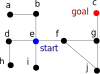
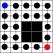

Week 2: Basic Search Algorithms
Chris Tralie
9/6/2021
Important New Terms: autonomous agent, state, neighbors, graph, frontier, bfs, dfs, node expansion, branching factor, depth
Today we talked about some basic "blind search" algorithms for an autonomous agent to explore an unknown environment. We want to think broadly about a model where an agent starts in a particular state and wants to reach a particular goal state via a sequence of moves through other states. Each state has a list of neighbors, which are states that are reachable via a single move.
The above is an intentionally vague and general definition, and it is problem specific what is meant by a state, how to define a goal state, and what the neighbors of a particular state are. But to keep things concrete to start with, we will think about exploring graph. A graph is a collection of nodes which are connected by edges. We will focus on undirected graphs in this discussion, where if an edge exists from a node a to a node b, then it is possible to travel both from a to b and from b to a. In this context, we can think of a state as a node, and nodes connected by an edge are each others' neighbors. For example, in the graph below, we start at node e and want to reach node c by following a sequence of edges. The neighbors of e are {b, d, i, f}, so the first step we take has to visit one of them.
|  |
| Figure 1: An example graph search problem |
To keep things even simpler for the moment, we'll consider a pixel grid graph, which is a type of graph that's typically used for mazes. It is a grid of pixels where a white pixel is a node in the graph and a black pixel is a void. All white pixels that border each other to the left/right or above/below are connected by an edge. The image below shows an example:
|  |
| Figure 2: An example of a pixel grid graph |
Blind Search And The Frontier
We started with a class example where students start at particular pixel in a pixel graph and have to move towards a goal pixel. Pixels that have been explored are colored white, and pixels that are on the frontier, or the locations that are on the list of things to explore next, were marked in grey. Students could only move to locations on the frontier next, and at that point, the pixel would turn white and its neighbors would be added to the frontier. To drive the point home that we're talking about blind search algorithms, all unexplored pixels that aren't on the frontier are colored black (you can think of this like the "fog of war" in RTS games).
Below is the example that you can try again for yourself. Left click on the gray pixels to expand them.
Breadth-First Tree Search
As students reflected on the strategies they used to explore this unknown environment, one strategy that came up is referred to as breadth-first search (BFS). On the pixel graph, we can think of this like a ripple that moves outwards from the start pixel at an equal rate in all directions.
To define BFS mathematically, we need a queue data structure, which is also known as a "FIFO" data structure because the first objects we add are the first objects we remove (click here to review queues). In other words, a queue acts like any normal line, where the people at the front of the line get serviced first and new people waiting have to go to the back of the line. We'll refer to the operation of adding something as push and the operation of removing something as pop.
The pseudocode below shows the implementation of something known as Breadth-First Tree Search. We refer to the operation of adding all neighbors of a node to the queue as expanding that node.
BFSTree(start, goal):
state = start
frontier = [] // This is the queue
reachedGoal = false
while not reachedGoal and length(frontier) > 0:
// Take out element from front of line
state = frontier.pop()
if state == goal:
reachedGoal = true
else:
// Expand node
for n in state.neighbors():
frontier.push(n)
Let's examine the behavior of this algorithm below. We'll show the current node in blue, the next node that's planning to be expanded in cyan, and all of the nodes on the frontier in grey.
This algorithm does eventually reach the goal, but it takes a long time (nearly 5000 steps). Part of the problem is that we redo a lot of work because we never remember what we have visited. We can see this by building a tree that gives us an idea of what's on the frontier. Let's take again the example of a simple graph
| Figure 1: An example graph search problem |
Below is a depiction of how the search radius grows as nodes are added to the queue. The level of the tree corresponds to how many steps it took to get to the nodes at that level. We'll follow the convention that we add the neighbors in counter-clockwise order by the rendering of the tree, starting at some arbitrary neighbor.
When we first expand e, we add its neighbors d, i, f, b to the queue. This is shown at the first level of the tree. Then, once each of these neighbors has been expanded, the queue contains h, e, e, e, j, g, a, e. We can already see at this stage what the problem is: we're repeating a ton of work by having to revisit e multiple times. This will only get worse as we go. In more philosophical terms, Those that fail to learn from history are doomed to repeat it (-George Santayana)
To get an idea of just how bad things are, let's do a more formal analysis of the above algorithm. We define the branching factor (b) to be the maximum number of neighbors at each node, and the depth to be the minimum number of states that we need to follow to get from the start to the goal. If we relate how many nodes are at each level of the tree, we see the following:
- The first level after expanding the start node has b nodes in the worst case
- The second level has b2 nodes in the worst case, because each of the b nodes in the first level could each have expanded into their own set of b nodes.
- The third level has b3 nodes by similar reasoning
- ...
- By the time we reach the goal node, we have bd nodes on the frontier
As an example, let's suppose we're doing a search on an M x N grid with all pixels filled in, and the start and goal nodes are on opposite ends. In this case, it takes M+N-1 steps for any shortest path from the start to the goal, and so the depth d = M+N-1. We know from the above construction that the branching factor b = 4 (every node potentially has a left/right/up/down neighbor). So there will be 4M+N-1 nodes on the frontier by the time the goal is found. This is pretty lousy, because there are only MxN unique states on the grid to begin with, so we're clearly repeating tons of them to reach such a large number. For example, if M = N = 10, there are only 100 unique states on the grid, but there will be 419 = 274877906944. If we have nearly a trillion nodes on such a trivially small grid, then we're in trouble for any reasonably sized grid.
Breadth-First Graph Search
To fix the above problem, what we need to do is remember where we have visited. This is actually just a simple modification to the procedure we already have with one new data structure for storing where we have been
BFSTree(start, goal):
state = start
frontier = [] // This is the queue
visited = {} // Store what we have visited
reachedGoal = false
while not reachedGoal and length(frontier) > 0:
// Take out element from front of line
state = frontier.pop()
if state == goal:
reachedGoal = true
else:
// Expand node
for n in state.neighbors():
if not n in visited and not n in frontier:
frontier.push(n)
Let's see how this runs on the example we've been looking at
Now it only takes 224 steps instead of nearly 5000! Furthermore, there are never more than 9 nodes on the queue since we're careful not to re-add anything that's already on the frontier or which has already been visited.
Depth-First Search
Another strategy we can take is to try to follow one direction for a while until we run out of things to explore, and then back up and try another direction. This is what's known as depth first search (DFS). The pseudocode is nearly identical to the pseudocode for BFS, except we use a stack instead of a queue to store the states in the frontier. A stack is what's known as a "Last in First Out" (LIFO), or, equivalently, a "First In Last Out" data structure (Click here to review stacks). Instead of thinking of it like people lining up, you can think of it like a stack of plates. You don't want to disturb the stack, so you always pop off the very top most plate, which also happens to be the most recently added one.
This subtle change in the data structure makes a huge difference. Below is a demonstration of depth first graph search where we remember things as we go
We actually get a little lucky in this example because we happen sto start exploring the right direction first. Here's an example where we're a little bit less lucky
So in general, we can't really say which out of BFS or DFS is better in terms of runtime if we're doing a blind search. However, DFS does have better memory usage in some cases. We will discuss this more within the next few classes.
One last thing to be aware of is a huge problem that can happen with the tree-based version of DFS. If you look at the example below, you'll see it after a fairly short amount of time
In particular, tree-based DFS can run into infinite loops. If we return to our toy graph example, we end up in a loop around the starting node, as shown by the picture below
Surprisingly, there is actually a way to patch this up so that it works and has some advantages over the other techniques. We will discuss this within the next few classes